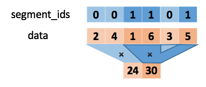

mindspore.ops.unsorted_segment_prod
- mindspore.ops.unsorted_segment_prod(x, segment_ids, num_segments)[source]
Computes the product of a tensor along segments.
The following figure shows the calculation process of UnsortedSegmentProd:
Note
If the segment_id i is absent in the segment_ids, then output[i] will be filled with 1.
The segment_ids must be non-negative tensor.
- Parameters
x (Tensor) – The shape is \((x_1, x_2, ..., x_R)\). With float16, float32 or int32 data type.
segment_ids (Tensor) – A 1-D tensor whose shape is \((x_1)\), the value must be non-negative tensor. The data type must be int32.
num_segments (int) – The value specifies the number of distinct segment_ids.
- Returns
Tensor, set the number of num_segments as N, the shape is \((N, x_2, ..., x_R)\).
- Raises
TypeError – If num_segments is not an int.
ValueError – If length of shape of segment_ids is not equal to 1.
- Supported Platforms:
AscendGPU
Examples
>>> from mindspore import Tensor >>> from mindspore import ops >>> import numpy as np >>> x = Tensor(np.array([[1, 2, 3], [4, 5, 6], [4, 2, 1]]).astype(np.float32)) >>> segment_ids = Tensor(np.array([0, 1, 0]).astype(np.int32)) >>> num_segments = 2 >>> output = ops.unsorted_segment_prod(x, segment_ids, num_segments) >>> print(output) [[4. 4. 3.] [4. 5. 6.]]